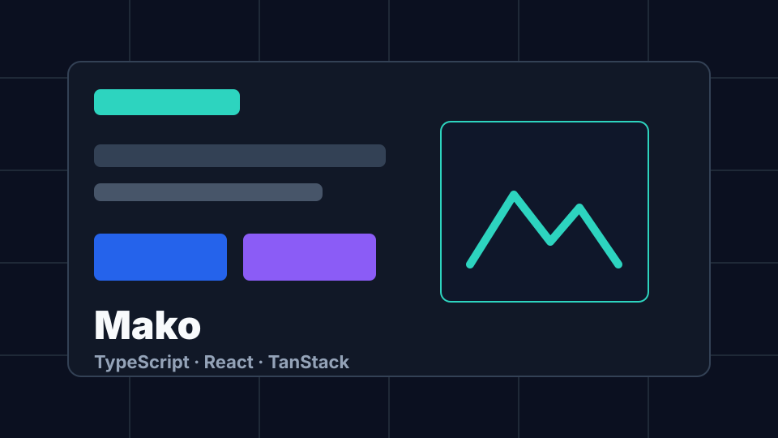
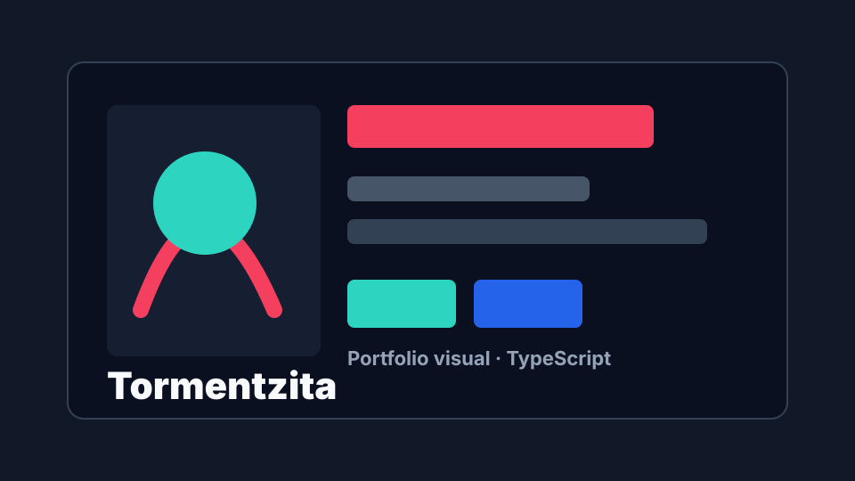
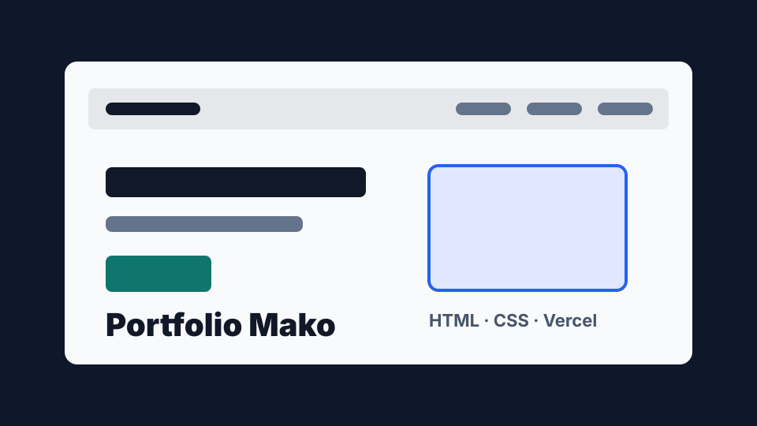
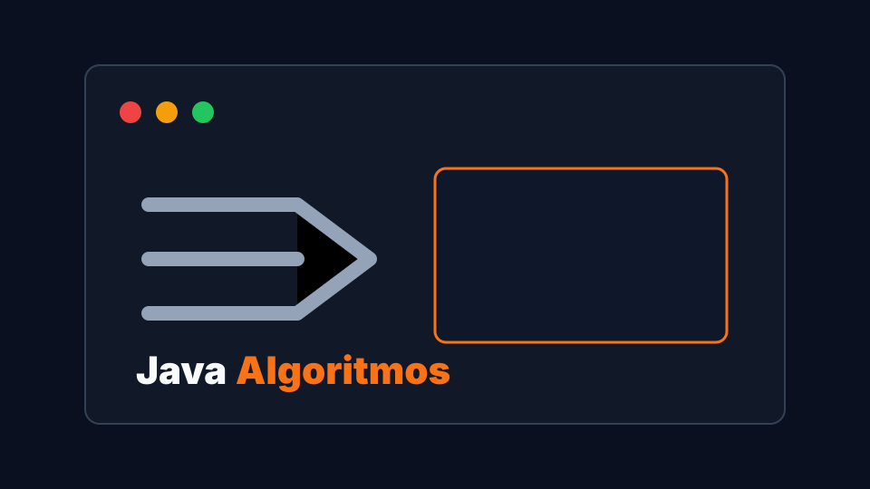
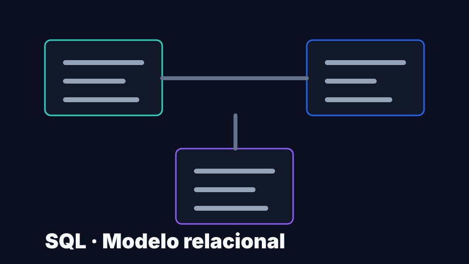
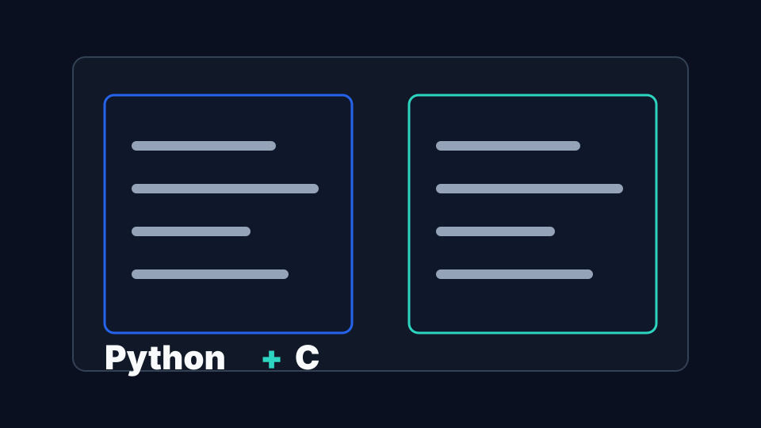

Resolución de problemas
Enfoque lógico para dividir problemas, validar soluciones y mejorar iterativamente.
Portfolio 2026 · Ingeniería Informática
Estudiante de Ingeniería Informática en Sistemas de Información, orientado a desarrollo de software, aplicaciones web, algoritmos y bases de datos.
Busco prácticas y primeras oportunidades junior donde aportar capacidad de aprendizaje, trabajo en equipo y una base técnica sólida en Java, Python, C, SQL y tecnologías web modernas.
Sobre mí
Soy estudiante de Ingeniería Informática con base en programación, estructuras de datos, algoritmos, sistemas y bases de datos. Me interesa construir software claro, mantenible y útil, desde aplicaciones web hasta proyectos académicos en Java, C o Python.
Mi objetivo en 2026 es incorporarme a un equipo donde pueda aprender de buenas prácticas reales, participar en entregas de producto y seguir creciendo como ingeniero de software.
Enfoque lógico para dividir problemas, validar soluciones y mejorar iterativamente.
Comunicación clara, responsabilidad y adaptación a nuevos entornos técnicos.
Curiosidad por herramientas modernas, arquitectura frontend y fundamentos de software.
Educación
Universidad Pablo de Olavide (UPO)
Competencias técnicas
Tecnologías trabajadas en proyectos académicos, repositorios públicos y aplicaciones web personales.
Proyectos
Selección orientada a enseñar código, aprendizaje y capacidad de construir soluciones completas o académicas.

TypeScript · Vercel
Aplicación web TypeScript publicada en Vercel para practicar arquitectura frontend moderna, componentes y estructura de proyecto profesional.

TypeScript · Portfolio
Portfolio visual para perfil creativo, usado para practicar interfaz, estructura frontend y despliegue de una experiencia web cuidada.

HTML · Portfolio
Portfolio personal orientado a presentar habilidades técnicas, proyectos y enlaces profesionales de forma directa.

Java · Algoritmos
Proyecto académico centrado en resolución de problemas, estructuras de datos y programación orientada a objetos en Java.

SQL · Datos
Práctica académica centrada en modelado relacional, normalización y consultas SQL para organizar información de forma consistente.

Python · C
Ejercicios académicos para reforzar lógica computacional, scripts, estructuras básicas y fundamentos de programación procedural.
Experiencia
Desarrollo de portfolios, prácticas de Java, SQL, Python, C y ejercicios de sistemas. Enfoque en fundamentos, documentación, GitHub y despliegue web.
Incorporación a prácticas de Ingeniería Informática o rol junior donde seguir aprendiendo con acompañamiento técnico y aportar desde el primer día.
Certificaciones
Microcredencial Universitaria: Aplicaciones de la IA para la productividad personal.
Idiomas
Nativo
B2
A1
GitHub
Vista ligera de los datos públicos. Si la API no responde, el portfolio mantiene enlaces estáticos funcionales.
@itsmakodev
Estudiante de Ingeniería Informática y perfil junior software.
Contacto
Disponible para oportunidades junior, prácticas universitarias y proyectos donde seguir creciendo técnicamente.